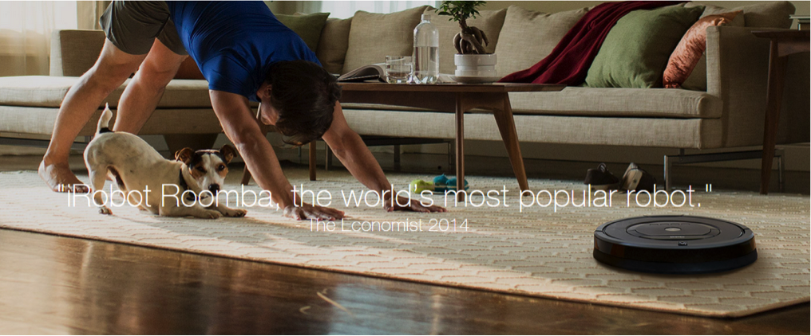

As you can see, there are endless possibilities when it comes to utilizing autonomous systems. However, for each of these possible benefits, there are many issues of concern that arise. The areas of concern that we will cover are cost, liability, security, and privacy.
Cost
A concern with autonomous systems, like many new technologies, is the cost. When it comes to consumer use, the cost may be too great at this point for some products like the autonomous vehicle to be practical for the everyday consumer. Since this is such a new and emerging technology it is hard to speculate on how much the premium would be to purchase a self-driving car, but according to a recent study, by the year 2025, self-driving technology could add $7,000-$10,000 to the cars sticker price. However, some systems that do more trivial tasks are at a reasonable cost.
iRobot RoombaThe iRobot Roomba was introduced back in 2002, and since then there have been over $10 million units sold worldwide. The newest release of the Roomba features automatic docking and recharging when it is done vaccuuming, and can be set to clean on a set schedule. The basic model of the Roomba starts at $399.99 and goes up to $699.99 for the most advanced model. Considering the price of other manual vaccuums, this is a reasonable cost to upgrade to autonomy.
Liability/Licensing issues
Liability is a huge concern with autonomous systems, particularly with vehicles. Who is responsible if a driverless vehicle gets into an accident? Is it the car owners’ responsibility? The carmaker? The software company? Even more concerning could be the scenario of an unavoidable crash. Does the car hit a deer or try to swerve off the road and potentially injure the passenger that way?
Because of the changing roles between the driver and car, there is also the issue of requirements to receive a driver’s license. Should you need to even have a driver’s license to ride in an autonomous vehicle? Should there be more emphasis put on training drivers how to move in and out of autonomy modes and monitoring the systems? If procedures to attain licensing are changed, it may cause there to be requirements on the systems interface to be universally understandable so as to have something consistent to test/train drivers on.
Security
As systems become more computerized the cyber risk increases. Particularly with autonomous systems that are used for transportation, whether it be cars, trains, marine, or drones. We all know that these days no one is safe from being hacked, even the largest organizations, so it is certainly possible that a system like a driverless car could be hacked and cause destruction beyond just getting your identity stolen.
Privacy
Autonomous systems generally have many sensors or cameras that are always collected data about their surroundings such as the amazon drone delivery system that is being tested. What type of data is being collected when a package is delivered? Possibly looking inside of customers windows and recording all of the surroundings.
Another example of the privacy concern that goes along with autonomous vehicles is the travel data of your car. The system is always keeping track of where you are going, for how long, and what times. Is this data something that is going to be stored somewhere and who has the ability to use and control it?
All of these issues are going to have to be addressed along the way of this autonomous system revolution that we are just seeing the beginning of.